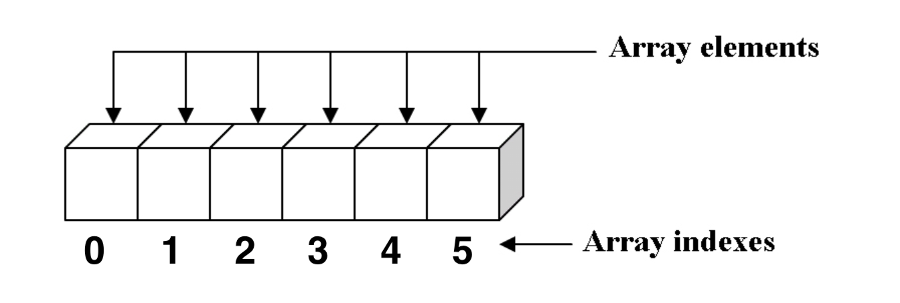

SVA HSG5343a Fall 2018
Web Programming I
Lecture 10 - Javascript III
Jasmin Rubinovitz
yrubinovitz@sva.edu
Javascript and the DOM
Connecting JS, CSS and HTML
Learning from Examples
Download the Examples file
The DOM
The Document Object Model (DOM) is a programming interface for HTML documents. It represents the page so that programs can change the document structure, style, and content.
The DOM is actually a collection of objects and methods that you can call from JavaScript to interact with HTML/CSS of the page.
DOM Example - https://codepen.io/jasrub/pen/LXVNQL
Built in DOM elements
window - The browser window
- Example 1:
window.close() - Closes the current window
- Example 2:
window.pageYOffset - Sets or returns the Y position of the current page in relation to the upper left corner of a window's display area
navigator - Information about the web browser you are using
- Example:
navigator.userAgent - Returns the value of the user-agent header sent by the client to the server
screen - Information about the screen occupied by the web browser
- Example:
screen.width - Returns width of the display screen
Built in DOM elements
history - List of pages the user has visiteds
- Example:
history.go(-1) - Go back to the previous page (if any)
location - URL of the current document
- Example:
location.pathname - Sets or returns the path of the current URL
document - Current HTML page object model
- Example 1:
document.getElementsByTagName("some tag") - Get all elements of a certain type; returns an array
- Example 2:
element = document.getElementById("some ID") - Get a specific element on the page; returns an element
- Example 2A:
element.getElementsByTagName("some tag") - Same as above; returns an array
- Example 3:
document.createElement("some element")
Finding Elements in the document using CSS selector
- getElementsByTagName
- getElementById
- getElementsByClassName
- querySelector
- querySelectorAll
Builtins
Lots of functions and objects already exist for us! Smart people have created this commonly-used functions for things we often need. For example, if we have a string and we want to make everything lowercase, we can do this:
const sentence = "ThIs HaS wEiRd CaSiNg On It";
console.log(sentence.toLowerCase());
Builtins
Math is another javascript built in object that has many useful functions
console.log(Math.round(5.1));
console.log(Math.sqrt(2));
const name = "Jasmin Rubinovitz";
console.log(name.substr(6, 3));
We can call Math.round(5.1) and it'll return that number rounded (in this case, 5). We can use string.substr(indexToStart, howManyCharactersToInclude) to return part of a string.
We'll introduce them as we go but know there are a lot of them. You'll learn by doing.
We can use the browser console to check what built in methods exists for a variable
String methods;
Number methods;
Math Methods
Event Listeners

Events and Listeners
Web sites are meant to be reactive to users. In order to be reactive to them, we need to wait for them to do stuff, like click a button or type in an input. The way we do that is we wait for events to happen. An event is created every time certain events happens like when a user clicks something or when they type something. We respond to these events by having what are called event listeners. We give an event listener a function to run whenever an event happens.
HTML
<button class="event-button">Click me!</button>
JavaScript
const button = document.querySelector('.event-button');
button.addEventListener('click', function () {
alert("Hey there!");
});
developer.mozilla.org/en-US/docs/Web/Events
Event Attributes
- HTML elements have event attributes
onclickonselectonchangeonmouseoveronkeyuponkeydown
- Reference: https://developer.mozilla.org/en-US/docs/Web/API/Event
- JavaScript functions can be set as event handlers
- Example:
<h2 onclick="alert('Do you like green eggs and ham?');">I am Sam</h2>
Arrays
Arrays can hold any type of variable - number, string, boolean, another array, and an object (coming up)

Arrays
JavaScript can hold an array of variables in an Array object.
Arrays ordered collections of data.
We have 2 ways to define arrays:
- Square brackets notation (also called Array literal)
- the Array object notation
let myArray = [1, 2, 3];
let theSameArray = new Array(1, 2, 3);
* Using array literal is usually easier and more common
Arrays
Arrays have some useful built-in properties and methods (more about built-ins - later today)
- length
concat()join()push() --adds element to end of array and returns new list sizeshift() --removes and returns element at beginning of listpop() --removes and returns element at end of arrayunshift() --adds element to front of array and returns new list sizesort()- Complete list of array methods and properties
Arrays
Looping over Array Elements
We now have all the tools we need to print all the variables inside an array
const cities = [
"New York",
"San Francisco",
"Salt Lake City",
"Amsterdam",
"Hong Kong"
];
for (let i = 0; i < cities.length; i++) {
console.log(cities[i]);
}
Assignment
Create a Github repository for you final project
Create an index.html file that outlines the project structure
(for now, don't worry about the layout, design, animations etc. we will work on this next)